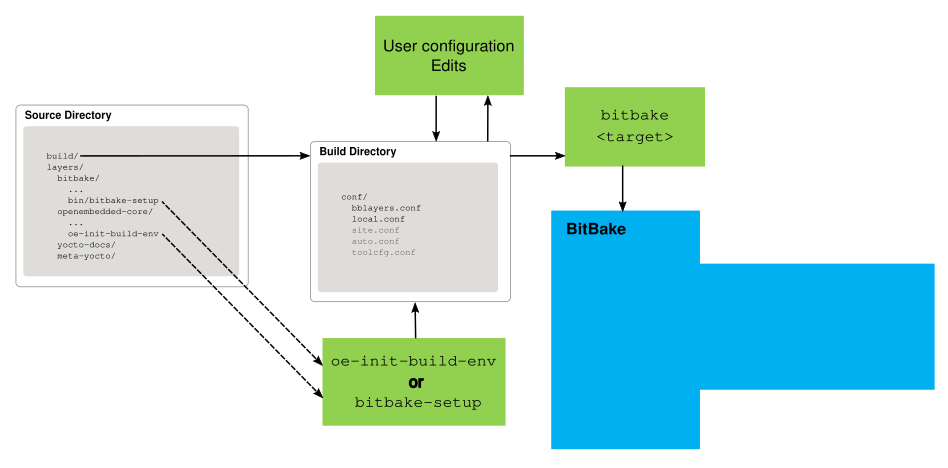
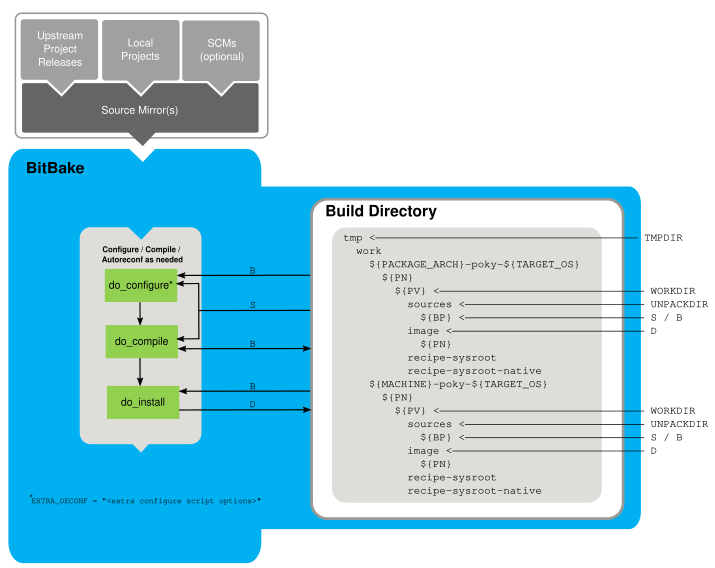
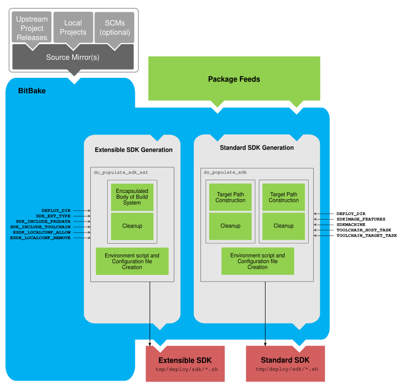
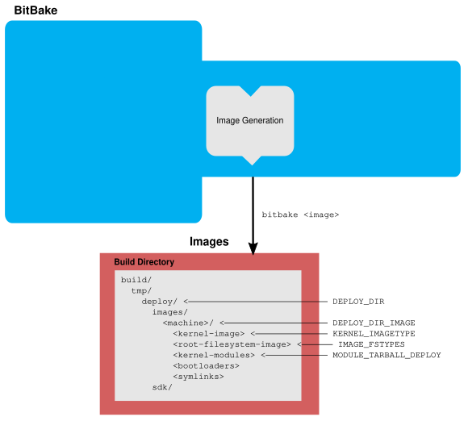
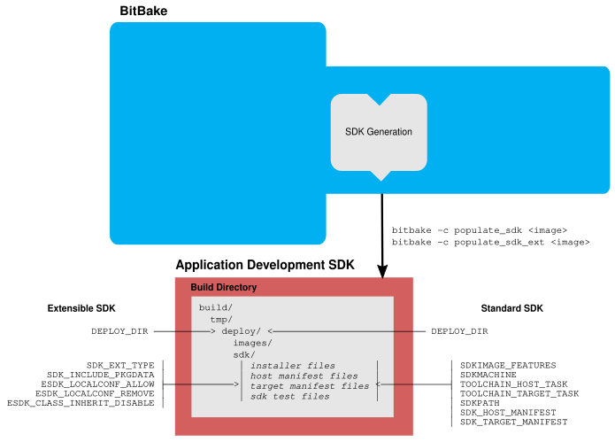
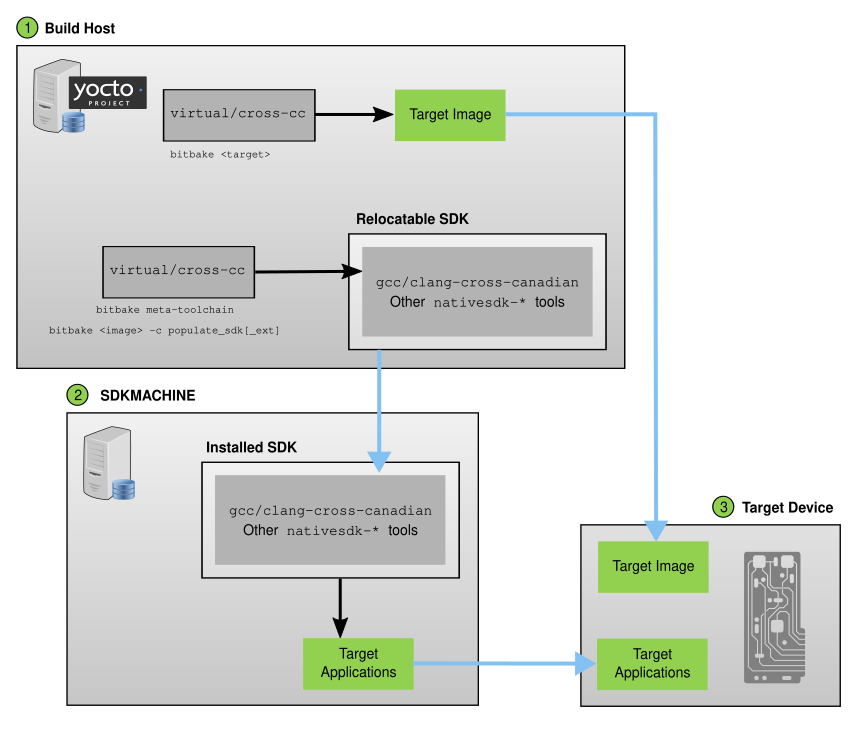
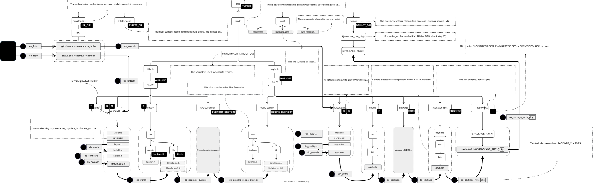

3 Yocto Project Concepts
This chapter provides explanations for Yocto Project concepts that go beyond the surface of "how-to" information and reference (or look-up) material. Concepts such as components, the OpenEmbedded Build System workflow, cross-development toolchains, shared state cache, and so forth are explained.
Nota
Throughout this section, many variables and their meanings are
introduced. If, in the context of a Build Directory,
you want to examine the value of any of these variables, you can
use the bitbake-getvar command, explained in the
"Viewing Variable Values" section.
3.1 Yocto Project Components
The BitBake task executor together with various types of configuration files form the OpenEmbedded-Core (OE-Core). This section overviews these components by describing their use and how they interact.
BitBake handles the parsing and execution of the data files. The data itself is of various types:
Recipes: Provides details about particular pieces of software.
Class Data: Abstracts common build information (e.g. how to build a Linux kernel).
Configuration Data: Defines machine-specific settings, policy decisions, and so forth. Configuration data acts as the glue to bind everything together.
BitBake knows how to combine multiple data sources together and refers to each data source as a layer. For information on layers, see the "Understanding and Creating Layers" section of the Yocto Project Development Tasks Manual.
Here are some brief details on these core components. For additional information on how these components interact during a build, see the "OpenEmbedded Build System Concepts" section.
3.1.1 BitBake
BitBake is the tool at the heart of the OpenEmbedded Build System and is responsible for parsing the Metadata, generating a list of tasks from it, and then executing those tasks.
This section briefly introduces BitBake. If you want more information on BitBake, see the BitBake User Manual.
To see a list of the options BitBake supports, use either of the following commands:
$ bitbake -h
$ bitbake --help
The most common usage for BitBake is bitbake recipename, where
recipename is the name of the recipe you want to build (referred
to as the "target"). The target often equates to the first part of a
recipe's filename (e.g. "foo" for a recipe file named foo_1.3.0.bb).
So, to process the matchbox-desktop_1.2.3.bb recipe file, you might
type the following:
$ bitbake matchbox-desktop
Several different versions of matchbox-desktop might exist. BitBake chooses
the one selected by the distribution configuration. You can get more details
about how BitBake chooses between different target versions and providers in the
"Preferences" section
of the BitBake User Manual.
BitBake also tries to execute any dependent tasks first. So for example,
before building matchbox-desktop, BitBake would build a cross
compiler and glibc if they had not already been built.
A useful BitBake option to consider is the -k or --continue
option. This option instructs BitBake to try and continue processing the
job as long as possible even after encountering an error. When an error
occurs, the target that failed and those that depend on it cannot be
remade. However, when you use this option other dependencies can still
be processed.
3.1.2 Recipes
Files that have the .bb suffix are "recipes" files. In general, a
recipe contains information about a single piece of software. This
information includes the location from which to download the unaltered
source, any source patches to be applied to that source (if needed),
which special configuration options to apply, how to compile the source
files, and how to package the compiled output.
The term "package" is sometimes used to refer to recipes. However, since
the word "package" is used for the packaged output from the OpenEmbedded
build system (i.e. .ipk, .deb or .rpm files), this document avoids
using the term "package" when referring to recipes.
3.1.3 Classes
Class files (.bbclass) contain information that is useful to share
between recipes files. An example is the autotools* class,
which contains common settings for any application that is built with
the GNU Autotools.
The "Classes" chapter in the Yocto Project
Reference Manual provides details about classes and how to use them.
3.1.4 Configurations
The configuration files (.conf) define various configuration
variables that govern the OpenEmbedded build process. These files fall
into several areas that define machine configuration options,
distribution configuration options, compiler tuning options, general
common configuration options, and user configuration options in
build/conf/local.conf, which is found in the Build Directory.
3.2 Layers
Layers are repositories that contain related metadata (i.e. sets of instructions) that tell the OpenEmbedded build system how to build a target. The Yocto Project Layer Model facilitates collaboration, sharing, customization, and reuse within the Yocto Project development environment. Layers logically separate information for your project. For example, you can use a layer to hold all the configurations for a particular piece of hardware. Isolating hardware-specific configurations allows you to share other metadata by using a different layer where that metadata might be common across several pieces of hardware.
There are many layers working in the Yocto Project development environment. The Yocto Project Compatible Layer Index and OpenEmbedded Layer Index both contain layers from which you can use or leverage.
By convention, layers in the Yocto Project follow a specific form.
Conforming to a known structure allows BitBake to make assumptions
during builds on where to find types of metadata. You can find
procedures and learn about tools (i.e. bitbake-layers) for creating
layers suitable for the Yocto Project in the
"Understanding and Creating Layers"
section of the Yocto Project Development Tasks Manual.
3.3 OpenEmbedded Build System Concepts
This section takes a more detailed look inside the build process used by the OpenEmbedded Build System, which is the build system specific to the Yocto Project. At the heart of the build system is BitBake, the task executor.
The following diagram represents the high-level workflow of a build. The remainder of this section expands on the fundamental input, output, process, and metadata logical blocks that make up the workflow.

In general, the build's workflow consists of several functional areas:
User Configuration: metadata you can use to control the build process.
Metadata Layers: Various layers that provide software, machine, and distro metadata.
Source Files: Upstream releases, local projects, and SCMs.
Build System: Processes under the control of BitBake. This block expands on how BitBake fetches source, applies patches, completes compilation, analyzes output for package generation, creates and tests packages, generates images, and generates cross-development tools.
Package Feeds: Directories containing output packages (RPM, DEB or IPK), which are subsequently used in the construction of an image or Software Development Kit (SDK), produced by the build system. These feeds can also be copied and shared using a web server or other means to facilitate extending or updating existing images on devices at runtime if runtime package management is enabled.
Images: Images produced by the workflow.
Application Development SDK: Cross-development tools that are produced along with an image or separately with BitBake.
3.3.1 User Configuration
User configuration helps define the build. Through user configuration, you can tell BitBake the target architecture for which you are building the image, where to store downloaded source, and other build properties.
The following figure shows an expanded representation of the "User Configuration" box of the general workflow figure:


BitBake needs some basic configuration files in order to complete a
build. These files are *.conf files. The minimally necessary ones
reside as example files in the conf subdirectory of the
Build Directory.
When you initialize the build environment, you can specify which directory will be the Source Directory.
Setting up the build environment creates a Build Directory
if one does not already exist. BitBake uses the Build Directory
for all its work during builds. The Build Directory has a conf subdirectory
that contains default versions of your build/conf/local.conf
and build/conf/bblayers.conf
configuration files. These default configuration files are created only if they do not already exist in the Build
Directory at the time you source the build environment setup script.
Configuration files provide many basic variables that define a build environment. To show a list of possible variables to configure from configuration files, see the local.conf.sample file in OpenEmbedded-Core (OE-Core):
Here is a non-exhaustive list:
Target Machine Selection: Controlled by the MACHINE variable.
Download Directory: Controlled by the DL_DIR variable.
Shared State Directory: Controlled by the SSTATE_DIR variable.
Persistent Data Directory: Controlled by the PERSISTENT_DIR variable.
Build Output: Controlled by the TMPDIR variable.
Distribution Policy: Controlled by the DISTRO variable.
Packaging Format: Controlled by the PACKAGE_CLASSES variable.
SDK Target Architecture: Controlled by the SDKMACHINE variable.
Extra Image Packages: Controlled by the EXTRA_IMAGE_FEATURES variable.
Nota
Configurations set in the build/conf/local.conf file can also be set in the build/conf/site.conf and build/conf/auto.conf configuration files.
The build/conf/bblayers.conf file tells BitBake what layers you want considered during the build. By default, the layers listed in this file include layers minimally needed by the build system. However, you must manually add any custom layers you have created. You can find more information on working with the build/conf/bblayers.conf file in the "Enabling Your Layer" section in the Yocto Project Development Tasks Manual.
The files site.conf and build/conf/auto.conf are not created by the
environment initialization script. If you want the build/conf/auto.conf file,
you need to create it yourself. The build/conf/auto.conf file is typically
created by an autobuilder:
site.conf: You can use the build/conf/site.conf configuration file to configure multiple build directories. For example, suppose you had several build environments and they shared some common features. You can set these default build properties here. A good example is perhaps the packaging format to use through the PACKAGE_CLASSES variable.
auto.conf: The file is usually created and written to by an autobuilder. The settings put into the file are typically the same as you would find in the build/conf/local.conf or the build/conf/site.conf files.
You can edit all configuration files to further define any particular build environment. This process is represented by the "User Configuration Edits" box in the figure.
When you launch your build with the bitbake target command, BitBake
sorts out the configurations to ultimately define your build
environment. It is important to understand that the
OpenEmbedded Build System reads the
configuration files in a specific order: site.conf, build/conf/auto.conf,
and build/conf/local.conf. And, the build system applies the normal assignment
statement rules as described in the
"Syntax and Operators" chapter
of the BitBake User Manual. Because the files are parsed in a specific
order, variable assignments for the same variable could be affected. For
example, if the build/conf/auto.conf file and the local.conf set variable1
to different values, because the build system parses build/conf/local.conf
after build/conf/auto.conf, variable1 is assigned the value from the
build/conf/local.conf file.
3.3.2 Metadata, Machine Configuration, and Policy Configuration
The previous section described the user configurations that define BitBake's global behavior. This section takes a closer look at the layers the build system uses to further control the build. These layers provide Metadata for the software, machine, and policies.
In general, there are three types of layer input. You can see them below the "User Configuration" box in the general workflow figure:
Metadata (.bb + Patches): Software layers containing user-supplied recipe files, patches, and append files. A good example of a software layer might be the meta-qt5 layer from the OpenEmbedded Layer Index. This layer is for version 5.0 of the popular Qt cross-platform application development framework for desktop, embedded and mobile.
Machine BSP Configuration: Board Support Package (BSP) layers (i.e. "BSP Layer" in the following figure) providing machine-specific configurations. This type of information is specific to a particular target architecture. A good example of a BSP layer from the Reference Embedded Distribution (Poky) is the meta-yocto-bsp layer.
Policy Configuration: Distribution Layers (i.e. "Distro Layer" in the following figure) providing top-level or general policies for the images or SDKs being built for a particular distribution. For example, in the Poky Reference Distribution the distro layer is the meta-poky layer. Within the distro layer is a
conf/distrodirectory that contains distro configuration files (e.g. poky.conf that contain many policy configurations for the Poky distribution.
The following figure shows an expanded representation of these three layers from the general workflow figure:

In general, all layers have a similar structure. They all contain a
licensing file (e.g. COPYING.MIT) if the layer is to be distributed,
a README file as good practice and especially if the layer is to be
distributed, a configuration directory, and recipe directories. You can
learn about the general structure for layers used with the Yocto Project
in the
"Creating Your Own Layer"
section in the
Yocto Project Development Tasks Manual. For a general discussion on
layers and the many layers from which you can draw, see the
"Layers" and
"The Yocto Project Layer Model" sections both
earlier in this manual.
If you explored the previous links, you discovered some areas where many layers that work with the Yocto Project exist. The Source Repositories also shows layers categorized under "Yocto Metadata Layers."
Nota
There are layers in the Yocto Project Source Repositories that cannot be found in the OpenEmbedded Layer Index. Such layers are either deprecated or experimental in nature.
BitBake uses the build/conf/bblayers.conf file, which is part of the user configuration, to find what layers it should be using as part of the build.
3.3.2.1 Distro Layer
A distribution layer provides policy configurations for your
distribution. Best practices dictate that you isolate these types of
configurations into their own layer. Settings you provide in
conf/distro/distro.conf override similar settings that BitBake finds
in your build/conf/local.conf file in the Build Directory.
The following list provides some explanation and references for what you typically find in a distribution layer (recall that meta-poky is such a layer):
classes, classes-global, classes-recipe: Class files (
.bbclass) hold common functionality that can be shared among recipes in the distribution. When your recipes inherit a class, they take on the settings and functions for that class. You can read more about class files in the "Classes" chapter of the Yocto Reference Manual.conf: This area holds configuration files for the layer (
conf/layer.conf), the distribution (conf/distro/distro.conf), and any distribution-wide include files.recipes-*: Recipes and append files that affect common functionality across the distribution. This area could include recipes and append files to add distribution-specific configuration, initialization scripts, custom image recipes, and so forth. Examples of
recipes-*directories arerecipes-coreandrecipes-extra. Hierarchy and contents within arecipes-*directory can vary. Generally, these directories contain recipe files (*.bb), recipe append files (*.bbappend), directories that are distro-specific for configuration files, and so forth.
3.3.2.2 BSP Layer
A BSP layer provides machine configurations that target specific hardware. Everything in this layer is specific to the machine for which you are building the image or the SDK. A common structure or form is defined for BSP layers. You can learn more about this structure in the Yocto Project Board Support Package (BSP) Manual.
Nota
In order for a BSP layer to be considered compliant with the Yocto Project, it must meet some structural requirements.
A BSP layer's configuration directory contains configuration files for
the machine (conf/machine/machine.conf) and, of course, the layer
(conf/layer.conf).
The remainder of the layer is dedicated to specific recipes by function:
recipes-bsp, recipes-core, recipes-graphics,
recipes-kernel, and so forth. There can be metadata for multiple
formfactors, graphics support systems, and so forth.
Nota
While the figure shows several
recipes-*
directories, not all these directories appear in all BSP layers.
3.3.2.3 Software Layer
A software layer provides the Metadata for additional software packages used during the build. This layer does not include Metadata that is specific to the distribution or the machine, which are found in their respective layers.
This layer contains any recipes, append files, and patches that your project needs.
3.3.3 Sources
In order for the OpenEmbedded build system to create an image or any target, it must be able to access source files. The general workflow figure represents source files using the "Upstream Project Releases", "Local Projects", and "SCMs (optional)" boxes. The figure represents mirrors, which also play a role in locating source files, with the "Source Materials" box.
The method by which source files are ultimately organized is a function of the project. For example, for released software, projects tend to use tarballs or other archived files that can capture the state of a release guaranteeing that it is statically represented. On the other hand, for a project that is more dynamic or experimental in nature, a project might keep source files in a repository controlled by a Source Control Manager (SCM) such as Git. Pulling source from a repository allows you to control the point in the repository (the revision) from which you want to build software. A combination of the two is also possible.
BitBake uses the SRC_URI variable to point to source files regardless of their location. Each recipe must have a SRC_URI variable that points to the source.
Another area that plays a significant role in where source files come from is pointed to by the DL_DIR variable. This area is a cache that can hold previously downloaded source. You can also instruct the OpenEmbedded build system to create tarballs from Git repositories, which is not the default behavior, and store them in the DL_DIR by using the BB_GENERATE_MIRROR_TARBALLS variable.
Judicious use of a DL_DIR directory can save the build system a trip across the Internet when looking for files. A good method for using a download directory is to have DL_DIR point to an area outside of your Build Directory. Doing so allows you to safely delete the Build Directory if needed without fear of removing any downloaded source file.
The remainder of this section provides a deeper look into the source files and the mirrors. Here is a more detailed look at the source file area of the general workflow figure:

3.3.3.1 Upstream Project Releases
Upstream project releases exist anywhere in the form of an archived file (e.g. tarball or zip file). These files correspond to individual recipes. For example, the figure uses specific releases each for BusyBox, Qt, and Dbus. An archive file can be for any released product that can be built using a recipe.
3.3.3.2 Local Projects
Local projects are custom bits of software the user provides. These bits reside somewhere local to a project --- perhaps a directory into which the user checks in items (e.g. a local directory containing a development source tree used by the group).
The canonical method through which to include a local project is to use the externalsrc class to include that local project. You use either build/conf/local.conf or a recipe's append file to override or set the recipe to point to the local directory from which to fetch the source.
3.3.3.3 Source Control Managers (Optional)
Another place from which the build system can get source files is with Fetchers employing various Source Control Managers (SCMs) such as Git or Subversion. In such cases, a repository is cloned or checked out. The do_fetch task inside BitBake uses the SRC_URI variable and the argument's prefix to determine the correct fetcher module.
Nota
For information on how to have the OpenEmbedded build system generate tarballs for Git repositories and place them in the DL_DIR directory, see the BB_GENERATE_MIRROR_TARBALLS variable in the Yocto Project Reference Manual.
When fetching a repository, BitBake uses the SRCREV variable to determine the specific revision from which to build.
3.3.3.4 Source Mirror(s)
There are two kinds of mirrors: pre-mirrors and regular mirrors. The PREMIRRORS and MIRRORS variables point to these, respectively. BitBake checks pre-mirrors before looking upstream for any source files. Pre-mirrors are appropriate when you have a shared directory that is not a directory defined by the DL_DIR variable. A Pre-mirror typically points to a shared directory that is local to your organization.
Regular mirrors can be any site across the Internet that is used as an alternative location for source code should the primary site not be functioning for some reason or another.
3.3.4 Package Feeds
When the OpenEmbedded build system generates an image or an SDK, it gets the packages from a package feed area located in the Build Directory. The general workflow figure shows this package feeds area in the upper-right corner.
This section looks a little closer into the package feeds area used by the build system. Here is a more detailed look at the area:

Package feeds are an intermediary step in the build process. The OpenEmbedded build system provides classes to generate different package types, and you specify which classes to enable through the PACKAGE_CLASSES variable. Before placing the packages into package feeds, the build process validates them with generated output quality assurance checks through the insane class.
The package feed area resides in the Build Directory. The directory the build system uses to temporarily store packages is determined by a combination of variables and the particular package manager in use. See the "Package Feeds" box in the illustration and note the information to the right of that area. In particular, the following defines where package files are kept:
DEPLOY_DIR: Defined as
tmp/deployin the Build Directory.DEPLOY_DIR_*: Depending on the package manager used, the package type sub-folder. Given RPM, IPK, or DEB packaging and tarball creation, the DEPLOY_DIR_RPM, DEPLOY_DIR_IPK, or DEPLOY_DIR_DEB variables are used, respectively.PACKAGE_ARCH: Defines architecture-specific sub-folders. For example, packages could be available for the i586 or qemux86 architectures.
BitBake uses the
do_package_write_*
tasks to generate packages and place them into the package holding area
(e.g. do_package_write_ipk for IPK packages). See the
"do_package_write_deb",
"do_package_write_ipk",
and
"do_package_write_rpm"
sections in the Yocto Project Reference Manual for additional
information. As an example, consider a scenario where an IPK packaging
manager is being used and there is package architecture support for both
i586 and qemux86. Packages for the i586 architecture are placed in
build/tmp/deploy/ipk/i586, while packages for the qemux86
architecture are placed in build/tmp/deploy/ipk/qemux86.
3.3.5 BitBake Tool
The OpenEmbedded build system uses BitBake to produce images and Software Development Kits (SDKs). You can see from the general workflow figure, the BitBake area consists of several functional areas. This section takes a closer look at each of those areas.
Nota
Documentation for the BitBake tool is available separately. See the BitBake User Manual for reference material on BitBake.
3.3.5.1 Source Fetching
The first stages of building a recipe are to fetch and unpack the source code:

The do_fetch and do_unpack tasks fetch the source files and unpack them into the Build Directory.
Nota
For every local file (e.g. file://) that is part of a recipe's
SRC_URI statement, the OpenEmbedded build system takes a
checksum of the file for the recipe and inserts the checksum into
the signature for the do_fetch task. If any local
file has been modified, the do_fetch task and all
tasks that depend on it are re-executed.
By default, everything is accomplished in the Build Directory, which has a defined structure. For additional general information on the Build Directory, see the "build/" section in the Yocto Project Reference Manual.
Each recipe has an area in the Build Directory where the unpacked
source code resides. The UNPACKDIR variable points to this area for a
recipe's unpacked source code, and has the default sources name. The
preceding figure and the following list describe the Build Directory's
hierarchy:
TMPDIR: The base directory where the OpenEmbedded build system performs all its work during the build. The default base directory is the
tmpdirectory.PACKAGE_ARCH: The architecture of the built package or packages. Depending on the eventual destination of the package or packages (i.e. machine architecture, Build Host, SDK, or specific machine), PACKAGE_ARCH varies. See the variable's description for details.
TARGET_OS: The operating system of the target device. A typical value would be "linux" (e.g. "qemux86-poky-linux").
PN: The name of the recipe used to build the package. This variable can have multiple meanings. However, when used in the context of input files, PN represents the name of the recipe.
WORKDIR: The location where the OpenEmbedded build system builds a recipe (i.e. does the work to create the package).
PV: The version of the recipe used to build the package.
UNPACKDIR: Contains the unpacked source files for a given recipe.
S: Contains the final location of the source code.
The default value for BP is
${BPN}-${PV}where:
Nota
In the previous figure, notice that there are two sample hierarchies: one based on package architecture (i.e. PACKAGE_ARCH) and one based on a machine (i.e. MACHINE). The underlying structures are identical. The differentiator being what the OpenEmbedded build system is using as a build target (e.g. general architecture, a build host, an SDK, or a specific machine).
3.3.5.2 Patching
Once source code is fetched and unpacked, BitBake locates patch files and applies them to the source files:

The do_patch task uses a recipe's SRC_URI statements and the FILESPATH variable to locate applicable patch files.
Default processing for patch files assumes the files have either
*.patch or *.diff file types (or a compressed form of those
file types). You can use SRC_URI parameters
to change the way the build system recognizes patch files. See the
do_patch task for more
information.
BitBake finds and applies multiple patches for a single recipe in the order in which it locates the patches. The FILESPATH variable defines the default set of directories that the build system uses to search for patch files. Once found, patches are applied to the recipe's source files, which are located in the S directory.
For more information on how the source directories are created, see the "Source Fetching" section. For more information on how to create patches and how the build system processes patches, see the "Patching Code" section in the Yocto Project Development Tasks Manual. You can also see the "Use devtool modify to Modify the Source of an Existing Component" section in the Yocto Project Application Development and the Extensible Software Development Kit (SDK) manual and the "Using Traditional Kernel Development to Patch the Kernel" section in the Yocto Project Linux Kernel Development Manual.
3.3.5.3 Configuration, Compilation, and Staging
After source code is patched, BitBake executes tasks that configure and compile the source code. Once compilation occurs, the files are copied to a holding area (staged) in preparation for packaging:


This step in the build process consists of the following tasks:
do_prepare_recipe_sysroot: This task sets up the two sysroots in the
${WORKDIR}(i.e.recipe-sysrootandrecipe-sysroot-native) so that the subsequent tasks of the recipe (notably do_configure and do_compile) can access the libraries, headers, and similar files built by the recipes on which it depends.recipe-sysroot: contains target libraries, and associated headers and other data needed to cross-build software from its sourcesrecipe-sysroot-native: contains host-native executables with their libraries and other data, so that they can be run directly on the build host when that is required by the build process
do_configure: This task configures the source by enabling and disabling any build-time and configuration options for the software being built. Configurations can come from the recipe itself as well as from an inherited class. Additionally, the software itself might configure itself depending on the target for which it is being built.
The configurations handled by the do_configure task are specific to configurations for the source code being built by the recipe.
If you are using the autotools* class, you can add additional configuration options by using the EXTRA_OECONF or PACKAGECONFIG_CONFARGS variables. For information on how this variable works within that class, see the autotools* class here.
do_compile: Once a configuration task has been satisfied, BitBake compiles the source using the do_compile task. Compilation occurs in the directory pointed to by the B variable. Realize that the B directory is, by default, the same as the S directory.
do_install: After compilation completes, BitBake executes the do_install task. This task copies files from the B directory and places them in a holding area pointed to by the D variable. Packaging occurs later using files from this holding directory.
3.3.5.4 Package Splitting
After source code is configured, compiled, and staged, the build system analyzes the results and splits the output into packages:

The do_package and do_packagedata tasks combine to analyze the files found in the D directory and split them into subsets based on available packages and files. Analysis involves the following as well as other items: splitting out debugging symbols, looking at shared library dependencies between packages, and looking at package relationships.
The do_packagedata task creates package metadata based on the analysis such that the build system can generate the final packages. The do_populate_sysroot task stages (copies) a subset of the files installed by the do_install task into the appropriate sysroot. Working, staged, and intermediate results of the analysis and package splitting process use several areas:
PKGD: The destination directory (i.e.
package) for packages before they are split into individual packages.PKGDESTWORK: A temporary work area (i.e.
pkgdata) used by the do_package task to save package metadata.PKGDEST: The parent directory (i.e.
packages-split) for packages after they have been split.PKGDATA_DIR: A shared, global-state directory that holds packaging metadata generated during the packaging process. The packaging process copies metadata from PKGDESTWORK to the PKGDATA_DIR area where it becomes globally available.
STAGING_DIR_HOST: The path for the sysroot for the system on which a component is built to run (i.e.
recipe-sysroot).STAGING_DIR_NATIVE: The path for the sysroot used when building components for the build host (i.e.
recipe-sysroot-native).STAGING_DIR_TARGET: The path for the sysroot used when a component that is built to execute on a system and it generates code for yet another machine (e.g. cross-canadian recipes).
Packages for a recipe are listed in the PACKAGES variable. The bitbake.conf configuration file defines the following default list of packages:
PACKAGES = "${PN}-src ${PN}-dbg ${PN}-staticdev ${PN}-dev ${PN}-doc ${PN}-locale ${PACKAGE_BEFORE_PN} ${PN}"
Each of these packages contains a default list of files defined with the
FILES variable. For example, the package ${PN}-dev represents files
useful to the development of applications depending on ${PN}. The default
list of files for ${PN}-dev, also defined in bitbake.conf, is defined as follows:
FILES:${PN}-dev = "${includedir} ${FILES_SOLIBSDEV} ${libdir}/*.la \
${libdir}/*.o ${libdir}/pkgconfig ${datadir}/pkgconfig \
${datadir}/aclocal ${base_libdir}/*.o \
${libdir}/${BPN}/*.la ${base_libdir}/*.la \
${libdir}/cmake ${datadir}/cmake"
The paths in this list must be absolute paths from the point of view of the root filesystem on the target, and must not make a reference to the variable D or any WORKDIR related variable. A correct example would be:
${sysconfdir}/foo.conf
Nota
The list of files for a package is defined using the override syntax by
separating FILES and the package name by a colon (:).
A given file can only ever be in one package. By iterating from the leftmost to rightmost package in PACKAGES, each file matching one of the patterns defined in the corresponding FILES definition is included in the package.
Nota
To find out which package installs a file, the oe-pkgdata-util
command-line utility can be used:
$ oe-pkgdata-util find-path '/etc/fstab'
base-files: /etc/fstab
For more information on the oe-pkgdata-util utility, see the section
Viewing Package Information with oe-pkgdata-util of the Yocto Project Development Tasks Manual.
To add a custom package variant of the ${PN} recipe named
${PN}-extra (name is arbitrary), one can add it to the
PACKAGE_BEFORE_PN variable:
PACKAGE_BEFORE_PN += "${PN}-extra"
Alternatively, a custom package can be added by adding it to the
PACKAGES variable using the prepend operator (=+):
PACKAGES =+ "${PN}-extra"
Depending on the type of packages being created (RPM, DEB, or IPK), the
do_package_write_*
task creates the actual packages and places them in the Package Feed
area, which is ${TMPDIR}/deploy. You can see the
"Package Feeds" section for more detail on
that part of the build process.
Nota
Support for creating feeds directly from the deploy/*
directories does not exist. Creating such feeds usually requires some
kind of feed maintenance mechanism that would upload the new packages
into an official package feed (e.g. the Ångström distribution). This
functionality is highly distribution-specific and thus is not
provided out of the box.
3.3.5.5 Image Generation
Once packages are split and stored in the Package Feeds area, the build system uses BitBake to generate the root filesystem image:

The image generation process consists of several stages and depends on several tasks and variables. The do_rootfs task creates the root filesystem (file and directory structure) for an image. This task uses several key variables to help create the list of packages to actually install:
IMAGE_INSTALL: Lists out the base set of packages from which to install from the Package Feeds area.
PACKAGE_EXCLUDE: Specifies packages that should not be installed into the image.
IMAGE_FEATURES: Specifies features to include in the image. Most of these features map to additional packages for installation.
PACKAGE_CLASSES: Specifies the package backend (e.g. RPM, DEB, or IPK) to use and consequently helps determine where to locate packages within the Package Feeds area.
IMAGE_LINGUAS: Determines the language(s) for which additional language support packages are installed.
PACKAGE_INSTALL: The final list of packages passed to the package manager for installation into the image.
With IMAGE_ROOTFS pointing to the location of the filesystem under construction and the PACKAGE_INSTALL variable providing the final list of packages to install, the root file system is created.
Package installation is under control of the package manager (e.g. dnf/rpm, opkg, or apt/dpkg) regardless of whether or not package management is enabled for the target. At the end of the process, if package management is not enabled for the target, the package manager's data files are deleted from the root filesystem. As part of the final stage of package installation, post installation scripts that are part of the packages are run. Any scripts that fail to run on the build host are run on the target when the target system is first booted. If you are using a read-only root filesystem, all the post installation scripts must succeed on the build host during the package installation phase since the root filesystem on the target is read-only.
The final stages of the do_rootfs task handle post processing. Post processing includes creation of a manifest file and optimizations.
The manifest file (.manifest) resides in the same directory as the root
filesystem image. This file lists out, line-by-line, the installed packages.
The manifest file is useful for the testimage class,
for example, to determine whether or not to run specific tests. See the
IMAGE_MANIFEST variable for additional information.
Optimizing processes that are run across the image include mklibs
and any other post-processing commands as defined by the
ROOTFS_POSTPROCESS_COMMAND
variable. The mklibs process optimizes the size of the libraries.
After the root filesystem is built, processing begins on the image through the do_image task. The build system runs any pre-processing commands as defined by the IMAGE_PREPROCESS_COMMAND variable. This variable specifies a list of functions to call before the build system creates the final image output files.
The build system dynamically creates do_image_* tasks as needed, based on the image types specified in the IMAGE_FSTYPES variable. The process turns everything into an image file or a set of image files and can compress the root filesystem image to reduce the overall size of the image. The formats used for the root filesystem depend on the IMAGE_FSTYPES variable. Compression depends on whether the formats support compression.
As an example, a dynamically created task when creating a particular image type would take the following form:
do_image_type
So, if the type
as specified by the IMAGE_FSTYPES were ext4, the dynamically
generated task would be as follows:
do_image_ext4
The final task involved in image creation is the do_image_complete task. This task completes the image by applying any image post processing as defined through the IMAGE_POSTPROCESS_COMMAND variable. The variable specifies a list of functions to call once the build system has created the final image output files.
Nota
The entire image generation process is run under Pseudo. Running under Pseudo ensures that the files in the root filesystem have correct ownership.
3.3.5.6 SDK Generation
The OpenEmbedded build system uses BitBake to generate the Software Development Kit (SDK) installer scripts for both the standard SDK and the extensible SDK (eSDK):


Nota
For more information on the cross-development toolchain generation, see the "Cross-Development Toolchain Generation" section. For information on advantages gained when building a cross-development toolchain using the do_populate_sdk task, see the "Building an SDK Installer" section in the Yocto Project Application Development and the Extensible Software Development Kit (eSDK) manual.
Like image generation, the SDK script process consists of several stages and depends on many variables. The do_populate_sdk and do_populate_sdk_ext tasks use these key variables to help create the list of packages to actually install. For information on the variables listed in the figure, see the "Application Development SDK" section.
The do_populate_sdk task helps create the standard SDK and handles two parts: a target part and a host part. The target part is the part built for the target hardware and includes libraries and headers. The host part is the part of the SDK that runs on the SDKMACHINE.
The do_populate_sdk_ext task helps create the extensible SDK and handles host and target parts differently than its counterpart does for the standard SDK. For the extensible SDK, the task encapsulates the build system, which includes everything needed (host and target) for the SDK.
Regardless of the type of SDK being constructed, the tasks perform some
cleanup after which a cross-development environment setup script and any
needed configuration files are created. The final output is the
Cross-development toolchain installation script (.sh file), which
includes the environment setup script.
3.3.5.7 Stamp Files and the Rerunning of Tasks
For each task that completes successfully, BitBake writes a stamp file into the STAMPS_DIR directory. The beginning of the stamp file's filename is determined by the STAMP variable, and the end of the name consists of the task's name and current input checksum.
Nota
This naming scheme assumes that BB_SIGNATURE_HANDLER is "OEBasicHash", which is almost always the case in current OpenEmbedded.
To determine if a task needs to be rerun, BitBake checks if a stamp file with a matching input checksum exists for the task. In this case, the task's output is assumed to exist and still be valid. Otherwise, the task is rerun.
Nota
The stamp mechanism is more general than the shared state (sstate) cache mechanism described in the "Setscene Tasks and Shared State" section. BitBake avoids rerunning any task that has a valid stamp file, not just tasks that can be accelerated through the sstate cache.
However, you should realize that stamp files only serve as a marker that some work has been done and that these files do not record task output. The actual task output would usually be somewhere in TMPDIR (e.g. in some recipe's WORKDIR.) What the sstate cache mechanism adds is a way to cache task output that can then be shared between build machines.
Since STAMPS_DIR is usually a subdirectory of TMPDIR, removing TMPDIR will also remove STAMPS_DIR, which means tasks will properly be rerun to repopulate TMPDIR.
If you want some task to always be considered "out of date", you can mark it with the nostamp varflag. If some other task depends on such a task, then that task will also always be considered out of date, which might not be what you want.
For details on how to view information about a task's signature, see the "Viewing Task Variable Dependencies" section in the Yocto Project Development Tasks Manual.
3.3.6 Images
The images produced by the build system are compressed forms of the root filesystem and are ready to boot on a target device. You can see from the general workflow figure that BitBake output, in part, consists of images. This section takes a closer look at this output:


Nota
For a list of example images that the Yocto Project provides, see the "Images" chapter in the Yocto Project Reference Manual.
The build process writes images out to the Build Directory inside
the tmp/deploy/images/machine/ folder as shown in the figure. This
folder contains any files expected to be loaded on the target device.
The DEPLOY_DIR variable points to the deploy directory, while the
DEPLOY_DIR_IMAGE variable points to the appropriate directory
containing images for the current configuration.
kernel-image: A kernel binary file. The KERNEL_IMAGETYPE variable determines the naming scheme for the kernel image file. Depending on this variable, the file could begin with a variety of naming strings. The
deploy/images/machine directory can contain multiple image files for the machine.root-filesystem-image: Root filesystems for the target device (e.g.
*.ext3or*.bz2files). The IMAGE_FSTYPES variable determines the root filesystem image type. Thedeploy/images/machine directory can contain multiple root filesystems for the machine.kernel-modules: Tarballs that contain all the modules built for the kernel. Kernel module tarballs exist for legacy purposes and can be suppressed by setting the MODULE_TARBALL_DEPLOY variable to "0". The
deploy/images/machine directory can contain multiple kernel module tarballs for the machine.bootloaders: If applicable to the target machine, bootloaders supporting the image. The
deploy/images/machine directory can contain multiple bootloaders for the machine.symlinks: The
deploy/images/machine folder contains a symbolic link that points to the most recently built file for each machine. These links might be useful for external scripts that need to obtain the latest version of each file.
3.3.7 Application Development SDK
In the general workflow figure, the
output labeled "Application Development SDK" represents an SDK. The SDK
generation process differs depending on whether you build an extensible
SDK (e.g. bitbake -c populate_sdk_ext imagename) or a standard SDK
(e.g. bitbake -c populate_sdk imagename). This section takes a
closer look at this output:


The specific form of this output is a set of files that includes a
self-extracting SDK installer (*.sh), host and target manifest
files, and files used for SDK testing. When the SDK installer file is
run, it installs the SDK. The SDK consists of a cross-development
toolchain, a set of libraries and headers, and an SDK environment setup
script. Running this installer essentially sets up your
cross-development environment. You can think of the cross-toolchain as
the "host" part because it runs on the SDK machine. You can think of the
libraries and headers as the "target" part because they are built for
the target hardware. The environment setup script is added so that you
can initialize the environment before using the tools.
Nota
The Yocto Project supports several methods by which you can set up this cross-development environment. These methods include downloading pre-built SDK installers or building and installing your own SDK installer.
For background information on cross-development toolchains in the Yocto Project development environment, see the "Cross-Development Toolchain Generation" section.
For information on setting up a cross-development environment, see the Yocto Project Application Development and Software Development Kits (SDK/eSDK) Manual manual.
All the output files for an SDK are written to the deploy/sdk folder
inside the Build Directory as shown in the previous figure. Depending
on the type of SDK, there are several variables to configure these files.
The variables associated with an extensible SDK are:
DEPLOY_DIR: Points to the
deploydirectory.SDK_EXT_TYPE: Controls whether or not shared state artifacts are copied into the extensible SDK. By default, all required shared state artifacts are copied into the SDK.
SDK_INCLUDE_PKGDATA: Specifies whether or not packagedata is included in the extensible SDK for all recipes in the "world" target.
SDK_INCLUDE_TOOLCHAIN: Specifies whether or not the toolchain is included when building the extensible SDK.
ESDK_LOCALCONF_ALLOW: A list of variables allowed through from the build system configuration into the extensible SDK configuration.
ESDK_LOCALCONF_REMOVE: A list of variables not allowed through from the build system configuration into the extensible SDK configuration.
ESDK_CLASS_INHERIT_DISABLE: A list of classes to remove from the INHERIT value globally within the extensible SDK configuration.
This next list, shows the variables associated with a standard SDK:
DEPLOY_DIR: Points to the
deploydirectory.SDKMACHINE: Specifies the architecture of the machine on which the cross-development tools are run to create packages for the target hardware.
SDKIMAGE_FEATURES: Lists the features to include in the "target" part of the SDK.
TOOLCHAIN_HOST_TASK: Lists packages that make up the host part of the SDK (i.e. the part that runs on the SDKMACHINE). When you use
bitbake -c populate_sdk imagenameto create the SDK, a set of default packages apply. This variable allows you to add more packages.TOOLCHAIN_TARGET_TASK: Lists packages that make up the target part of the SDK (i.e. the part built for the target hardware).
SDKPATHINSTALL: Defines the default SDK installation path offered by the installation script.
SDK_HOST_MANIFEST: Lists all the installed packages that make up the host part of the SDK. This variable also plays a minor role for extensible SDK development as well. However, it is mainly used for the standard SDK.
SDK_TARGET_MANIFEST: Lists all the installed packages that make up the target part of the SDK. This variable also plays a minor role for extensible SDK development as well. However, it is mainly used for the standard SDK.
3.4 Cross-Development Toolchain Generation
The Yocto Project does most of the work for you when it comes to creating The Cross-Development Toolchain. This section provides some technical background on how cross-development toolchains are created and used. For more information on toolchains, you can also see the Yocto Project Application Development and Software Development Kits (SDK/eSDK) Manual manual.
In the Yocto Project development environment, cross-development toolchains are used to build images and applications that run on the target hardware. With just a few commands, the OpenEmbedded build system creates these necessary toolchains for you.
The following figure shows a high-level build environment regarding toolchain construction and use.


Most of the work occurs on the Build Host. This is the machine used to
build images and generally work within the Yocto Project
environment. When you run
BitBake to create an image, the
OpenEmbedded build system uses the host gcc compiler to bootstrap a
cross-compiler named gcc-cross (or clang-cross if Clang is used). This
compiler is what BitBake uses to compile source files when creating the target
image. You can think of it simply as an automatically generated
cross-compiler that is used internally within BitBake only.
The chain of events that occurs when the standard toolchain is bootstrapped:
gcc -> virtual/cross-binutils -> linux-libc-headers -> virtual/cross-cc -> libgcc-initial -> virtual/libc -> libgcc -> virtual/compilerlibs
gcc: The compiler, GNU Compiler Collection (GCC), provided by the Build Host, or by a buildtools tarball.virtual/cross-binutils: The binary utilities needed in order to run thevirtual/cross-ccphase of the bootstrap operation and build the headers for the C library.linux-libc-headers: Headers needed for the cross-compiler and C library build.virtual/cross-cc: The final stage of the bootstrap process for the cross-compiler. This stage results in the actual cross-compiler that BitBake uses when it builds an image for a targeted device.This tool is a "native" tool (i.e. it is designed to run on the build host).
libgcc-initial: An initial version of the GCC support library needed to bootstrapvirtual/libc.virtual/libc: An provider of the C Standard Library (for example, the GNU C Library).libgcc: The final version of the GCC support library which can only be built once there is a C library to link against.virtual/compilerlibs: Runtime libraries resulting from the toolchain bootstrapping process. This tool produces a binary that consists of the runtime libraries need for the targeted device.
You can use the OpenEmbedded build system to build an installer for the
relocatable SDK used to develop applications. When you run the
installer, it installs the toolchain, which contains the development
tools (e.g., gcc-cross-canadian, clang-cross-canadian,
binutils-cross-canadian, and other nativesdk-* tools), which are tools
native to the SDK (i.e. native to SDK_ARCH), you need to cross-compile
and test your software. The figure shows the commands you use to easily build
out this toolchain. This cross-development toolchain is built to execute on the
SDKMACHINE, which might or might not be the same machine as the Build
Host.
Nota
If your target architecture is supported by the Yocto Project, you can take advantage of pre-built images that ship with the Yocto Project and already contain cross-development toolchain installers.
Here is the bootstrap process for the relocatable toolchain:
gcc -> virtual/cross-binutils -> linux-libc-headers -> virtual/cross-cc -> libgcc-initial -> virtual/libc -> gcc-cross-canadian/clang-cross-canadian
The chain is the same as the standard toolchain, except for the last item:
gcc-cross-canadian (or clang-cross-canadian) is the final relocatable
cross-compiler. When run on the SDKMACHINE, this tool produces
executable code that runs on the target device. Only one cross-canadian compiler
is produced per architecture since they can be targeted at different processor
optimizations using configurations passed to the compiler through the compile
commands. This circumvents the need for multiple compilers and thus reduces the
size of the toolchains.
Nota
The extensible SDK does not use gcc-cross-canadian or clang-cross-canadian
since this SDK ships a copy of the OpenEmbedded build system and the
sysroot within it contains gcc-cross.
Nota
To learn how to use Clang for the SDK, see PREFERRED_TOOLCHAIN_SDK.
Nota
For information on advantages gained when building a cross-development toolchain installer, see the "Building an SDK Installer" appendix in the Yocto Project Application Development and the Extensible Software Development Kit (eSDK) manual.
3.6 Automatically Added Runtime Dependencies
The OpenEmbedded build system automatically adds common types of runtime
dependencies between packages, which means that you do not need to
explicitly declare the packages using
RDEPENDS. There are three automatic
mechanisms (shlibdeps, pcdeps, and depchains) that
handle shared libraries, package configuration (pkg-config) modules, and
-dev and -dbg packages, respectively. For other types of runtime
dependencies, you must manually declare the dependencies.
shlibdeps: During the do_package task of each recipe, all shared libraries installed by the recipe are located. For each shared library, the package that contains the shared library is registered as providing the shared library. More specifically, the package is registered as providing the soname of the library. The resulting shared-library-to-package mapping is saved globally in PKGDATA_DIR by the do_packagedata task.Simultaneously, all executables and shared libraries installed by the recipe are inspected to see what shared libraries they link against. For each shared library dependency that is found, PKGDATA_DIR is queried to see if some package (likely from a different recipe) contains the shared library. If such a package is found, a runtime dependency is added from the package that depends on the shared library to the package that contains the library.
The automatically added runtime dependency also includes a version restriction. This version restriction specifies that at least the current version of the package that provides the shared library must be used, as if "package (>= version)" had been added to RDEPENDS. This forces an upgrade of the package containing the shared library when installing the package that depends on the library, if needed.
If you want to avoid a package being registered as providing a particular shared library (e.g. because the library is for internal use only), then add the library to PRIVATE_LIBS inside the package's recipe.
pcdeps: During the do_package task of each recipe, all pkg-config modules (*.pcfiles) installed by the recipe are located. For each module, the package that contains the module is registered as providing the module. The resulting module-to-package mapping is saved globally in PKGDATA_DIR by the do_packagedata task.Simultaneously, all pkg-config modules installed by the recipe are inspected to see what other pkg-config modules they depend on. A module is seen as depending on another module if it contains a "Requires:" line that specifies the other module. For each module dependency, PKGDATA_DIR is queried to see if some package contains the module. If such a package is found, a runtime dependency is added from the package that depends on the module to the package that contains the module.
Nota
The pcdeps mechanism most often infers dependencies between -dev packages.
depchains: If a packagefoodepends on a packagebar, thenfoo-devandfoo-dbgare also made to depend onbar-devandbar-dbg, respectively. Taking the-devpackages as an example, thebar-devpackage might provide headers and shared library symlinks needed byfoo-dev, which shows the need for a dependency between the packages.The dependencies added by
depchainsare in the form of RRECOMMENDS.Nota
By default,
foo-devalso has an RDEPENDS-style dependency onfoo, because the default value ofRDEPENDS:${PN}-dev(set inbitbake.conf) includes "${PN}".To ensure that the dependency chain is never broken,
-devand-dbgpackages are always generated by default, even if the packages turn out to be empty. See the ALLOW_EMPTY variable for more information.
The do_package task depends on the do_packagedata
task of each recipe in DEPENDS through use of a
[deptask]
declaration, which guarantees that the required shared-library /
module-to-package mapping information will be available when needed as long as
DEPENDS has been correctly set.
3.7 Fakeroot and Pseudo
Some tasks are easier to implement when allowed to perform certain operations that are normally reserved for the root user (e.g. do_install, do_package_write*, do_rootfs, and do_image_*). For example, the do_install task benefits from being able to set the UID and GID of installed files to arbitrary values.
One approach to allowing tasks to perform root-only operations would be to require BitBake to run as root. However, this method is cumbersome and has security issues. The approach that is actually used is to run tasks that benefit from root privileges in a "fake" root environment. Within this environment, the task and its child processes believe that they are running as the root user, and see an internally consistent view of the filesystem. As long as generating the final output (e.g. a package or an image) does not require root privileges, the fact that some earlier steps ran in a fake root environment does not cause problems.
The capability to run tasks in a fake root environment is known as "fakeroot", which is derived from the BitBake keyword/variable flag that requests a fake root environment for a task.
In the OpenEmbedded Build System, the program that implements
fakeroot is known as Pseudo. Pseudo
overrides system calls by using the environment variable LD_PRELOAD,
which results in the illusion of running as root. To keep track of
"fake" file ownership and permissions resulting from operations that
require root permissions, Pseudo uses an SQLite 3 database. This
database is stored in
${WORKDIR}/pseudo/files.db
for individual recipes. Storing the database in a file as opposed to in
memory gives persistence between tasks and builds, which is not
accomplished using fakeroot.
Nota
If you add your own task that manipulates the same files or
directories as a fakeroot task, then that task also needs to run
under fakeroot. Otherwise, the task cannot run root-only operations,
and cannot see the fake file ownership and permissions set by the
other task. You need to also add a dependency on
virtual/fakeroot-native:do_populate_sysroot, giving the following:
fakeroot do_mytask () {
...
}
do_mytask[depends] += "virtual/fakeroot-native:do_populate_sysroot"
For more information, see the FAKEROOT* variables in the BitBake User Manual. You can also reference the "Why Not Fakeroot?" article for background information on Fakeroot and Pseudo.
3.8 BitBake Tasks Map
To understand how BitBake operates in the build directory and environment we can consider the following recipes and diagram, to have full picture about the tasks that BitBake runs to generate the final package file for the recipe.
We will have two recipes as an example:
libhello: A recipe that provides a shared librarysayhello: A recipe that useslibhellolibrary to do its job
Nota
sayhello depends on libhello at compile time as it needs the shared
library to do the dynamic linking process. It also depends on it at runtime
as the shared library loader needs to find the library.
For more details about dependencies check Dependencies.
libhello sources are as follows:
LICENSE: This is the license associated with this libraryMakefile: The file used bymaketo build the libraryhellolib.c: The implementation of the libraryhellolib.h: The C header of the library
sayhello sources are as follows:
LICENSE: This is the license associated with this projectMakefile: The file used bymaketo build the projectsayhello.c: The source file of the project
Before presenting the contents of each file, here are the steps
that we need to follow to accomplish what we want in the first place,
which is integrating sayhello in our root file system:
Create a Git repository for each project with the corresponding files
Create a recipe for each project
Make sure that
sayhellorecipe DEPENDS onlibhelloMake sure that
sayhellorecipe RDEPENDS onlibhelloAdd
sayhelloto IMAGE_INSTALL to integrate it into the root file system
The contents of libhello/Makefile are:
LIB=libhello.so
all: $(LIB)
$(LIB): hellolib.o
$(CC) $< -Wl,-soname,$(LIB).1 -fPIC $(LDFLAGS) -shared -o $(LIB).1.0
%.o: %.c
$(CC) -c $<
clean:
rm -rf *.o *.so*
Nota
When creating shared libraries, it is strongly recommended to follow the Linux conventions and guidelines (see this article for some background).
Nota
When creating Makefile files, it is strongly recommended to use CC, LDFLAGS
and CFLAGS as BitBake will set them as environment variables according
to your build configuration.
The contents of libhello/hellolib.h are:
#ifndef HELLOLIB_H
#define HELLOLIB_H
void Hello();
#endif
The contents of libhello/hellolib.c are:
#include <stdio.h>
void Hello(){
puts("Hello from a Yocto demo \n");
}
The contents of sayhello/Makefile are:
EXEC=sayhello
LDFLAGS += -lhello
all: $(EXEC)
$(EXEC): sayhello.c
$(CC) $< $(LDFLAGS) $(CFLAGS) -o $(EXEC)
clean:
rm -rf $(EXEC) *.o
The contents of sayhello/sayhello.c are:
#include <hellolib.h>
int main(){
Hello();
return 0;
}
The contents of libhello_0.1.bb are:
SUMMARY = "Hello demo library"
DESCRIPTION = "Hello shared library used in Yocto demo"
# NOTE: Set the License according to the LICENSE file of your project
# and then add LIC_FILES_CHKSUM accordingly
LICENSE = "CLOSED"
# Assuming the branch is main
# Change <username> accordingly
SRC_URI = "git://github.com/<username>/libhello;branch=main;protocol=https"
do_install(){
install -d ${D}${includedir}
install -d ${D}${libdir}
install hellolib.h ${D}${includedir}
oe_soinstall ${PN}.so.${PV} ${D}${libdir}
}
The contents of sayhello_0.1.bb are:
SUMMARY = "SayHello demo"
DESCRIPTION = "SayHello project used in Yocto demo"
# NOTE: Set the License according to the LICENSE file of your project
# and then add LIC_FILES_CHKSUM accordingly
LICENSE = "CLOSED"
# Assuming the branch is main
# Change <username> accordingly
SRC_URI = "git://github.com/<username>/sayhello;branch=main;protocol=https"
DEPENDS += "libhello"
RDEPENDS:${PN} += "libhello"
do_install(){
install -d ${D}${bindir}
install -m 0700 sayhello ${D}${bindir}
}
After placing the recipes in a custom layer we can run bitbake sayhello
to build the recipe.
The following diagram shows the sequences of tasks that BitBake executes to accomplish that.

